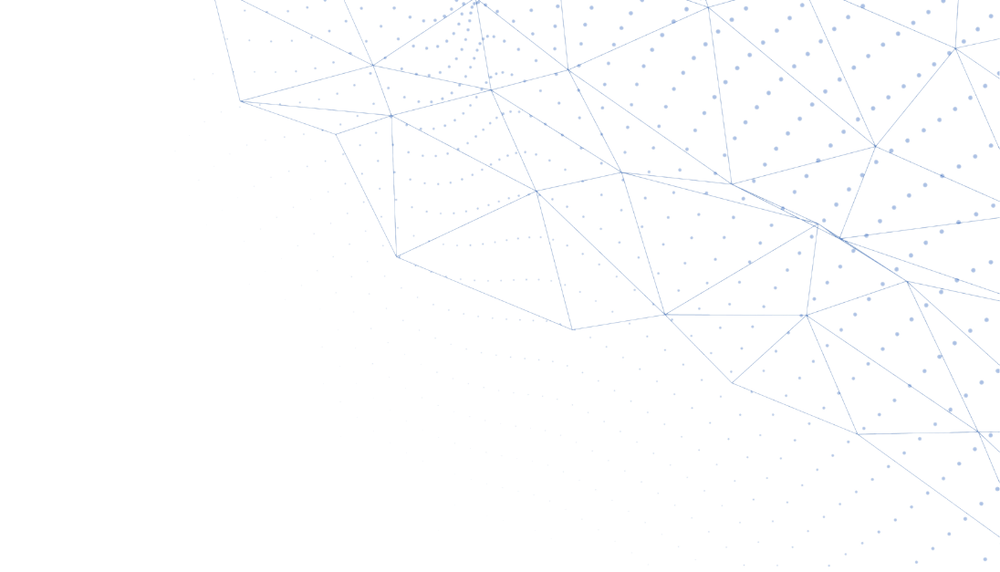

Download CV in PDF (English)
Education:
- 2008 – 2011 engineering academic bachelor's degree in Computer Science at Riga Technical University.
- 2005 - 2008 secondary education at Dobeles State Gymnasium.
- 1996 – 2005 primary education at Dobeles Secondary School No.1.
Experience:
- July 2020 – Present. Full-stack WEB developer at “KPHS” SIA.
- I am working as a full-time on-site mid-to-senior tier full-stack WEB developer.
- Using PHP framework Laravel for back-end and API development.
- Using Vue.js + Nuxt.js for reactive modern front-end development.
- Slicing designs and making them responsive for any resolutions by grid and flex approaches.
- Creating Apps, Themes and optimizing performance of Shopify sites.
- I have junior level DevOps skills (using Git, Docker, Node.js, Kubernetes with Rancher).
- 2005 – Present. Self employed WEB solutions developer.
- I execute individual orders from scratch using PHP, MySQL and WEB full-stack (HTML, CSS, JS) or based on the most popular content management systems - WordPress, Joomla or Drupal.
- March 2018 – August 2019. Senior System Analyst at “Emergn” PLC.
- I maintained the publicly available Latvian Court E-service system and the access restricted Latvian Court Information System. My responsibilities included implementing the customer's requirements from start to finish, which means: specification of requirements, software solution design, creation of design mock-ups, definition of tasks for programmers, workflow organization and optimization, testing of work (manual and automated), solution delivery to the customer.
- I developed technical specification and business requirement documents for various system subprojects.
- April 2015 – August 2017 Project Manager, Systems Analyst at „Transact Pro” LLC.
- My responsibilities included leading the development of a completely new system, which we successfully completed with a team of 6 people. The purpose of the system was to automate the process of payment processing.
- I defined the business requirements together with the internal stakeholder - the head of the department. I updated and refined the requirements during the development process using the Agile approach. I analyzed business problems and described business processes in Atlassian JIRA and Confluence, as well as created graphical representations of the flow of business processes with Microsoft Visio and similar tools.
- I developed technical documentation. My programming skills allowed me to describe the incoming/outgoing parameters, access restrictions, system installation and updating instructions at a high-level of detail. Since we used the micro-service architecture approach, I described the principles of operation of each service. I created system architecture diagram showing the components of the system, their scopes and relations. In the process of development I employed the company's best specialists and system architects even from other projects.
- I created a graphical representation of the relations between all user interfaces, as well as developed and prepared HTML, CSS, JS mock-ups for programmers.
- I organized the process of development. I created tasks for programmers (including senior proficiency) in the Atlassian JIRA system, as well as defined and optimized the workflow.
I manually tested the developed functionality, prepared testing scenarios for the tasks, as well as wrote automated (acceptance) tests to ensure the quality of each module and its inclusion in the overall system.
- I refined the requirements together with the stakeholder and employees to minimize redundant functions, save time and understand whether the development meets the requirements by constantly delivering small functional blocks with the Agile approach.
- March 2013 – April 2015 Software Developer at „Transact Pro” LLC.
- I developed new WEB portals and application forms for the products “Īstā Dāvanu Karte”, “Transact Pro Card” and “Priority Card”. I created a separate system in which the customer support specialists could administer the above-mentioned portals and the product orders and questions filled in online forms.
- I updated and maintained the online bank, developed payment application forms in it. I integrated two-factor authentication mechanism. I developed an interface and functionality to manage the authentication devices and their relation to clients.
- I updated and maintained the customer management system. I created automated regular large data processing algorithms to generate autonomous reports.
- I developed Libre Office Macros scripts for automated analysis of customer risk factors and generation of reports.
- December 2012 – March 2013 Systems Analyst at “VIA SMS” LLC.
- My responsibilities included writing queries to MySQL database.
Languages:
- Latvian - fluent. Native language.
- English - very good (speaking, reading, writing).
- Russian - fluent (speaking, reading); basic (writing). Four and a half years of experience working with Russian-speaking colleagues.
Skills and Interests:
- Extensive knowledge of software: Git, Atlassian JIRA.
- High level of proficiency in programming languages: SQL/PSM, PHP.
- Advanced knowledge and written Bachelor’s paper on topic “Website Optimization for Search Engines (SEO)”. I have developed my personal optimization strategy, regularly updating it to keep up with the latest trends.
- Experience with Scrum methodology and Agile practices.
- Training others to a high standard of competence.
- Ability to communicate effectively at all levels, developed analytical and creative thinking. Strong sense of responsibility.
- Ability to quickly master IT solutions and their code implementation.
- Training draughts for more than 14 years with achievements on a global scale.
- High achievements in district school Olympiads and IT contests.
- Driver’s license as of 2008.
- Passionate about the topic “Artificial Intelligence” and the future of technology.